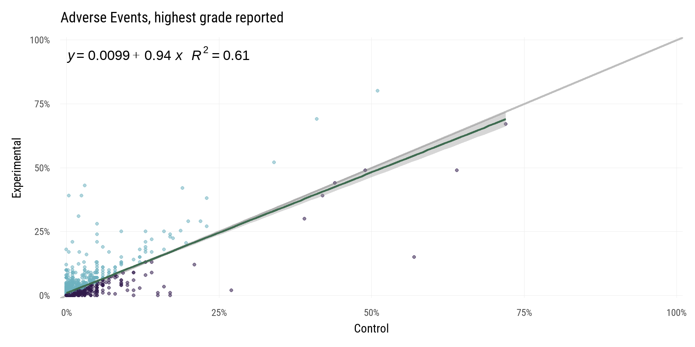
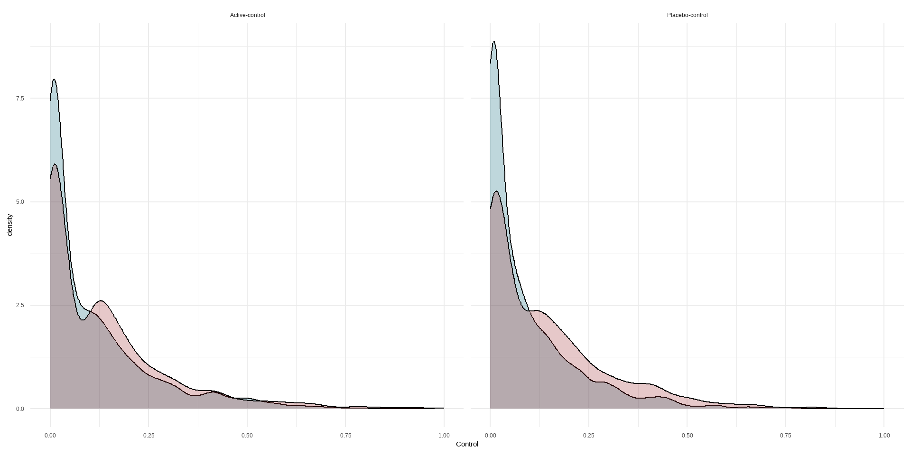
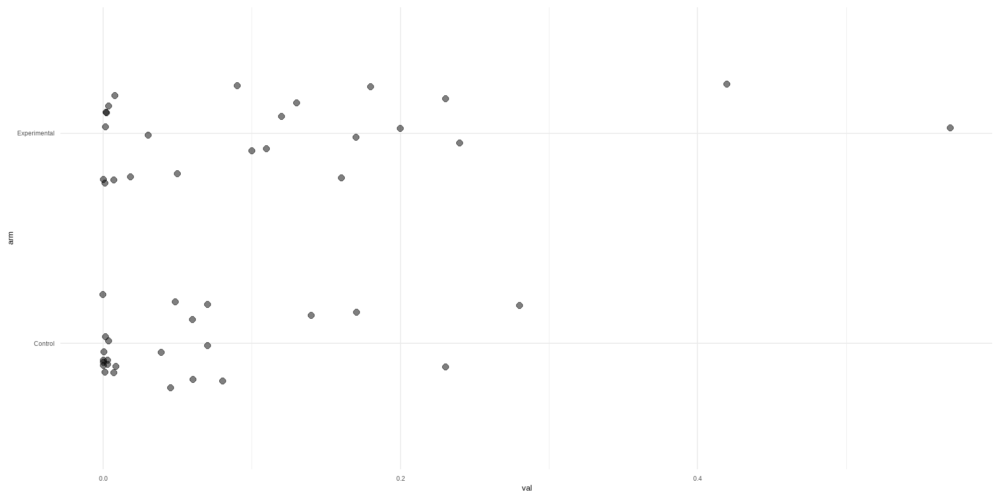
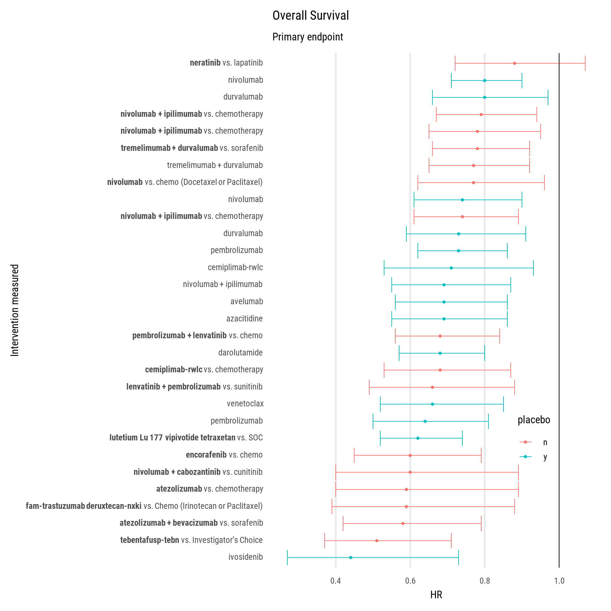
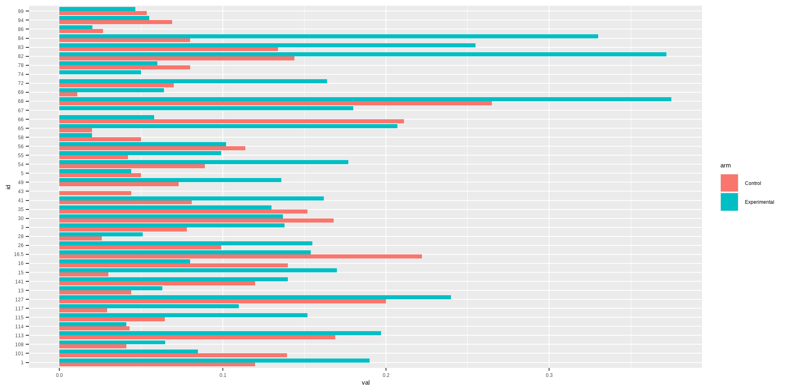

Oncology Adverse Events
Safety
All Adverse Events
This section has all adverse events listed in the study, including all levels of stratification.
|- Difference
% pts reporting adverse events, control arms vs. experimental. Dividing line is a 1:1 line
|- Relationship
This is the same but added a linear regression (green line)

Full linear model:
Call:
lm(formula = Experimental ~ Control, data = .)
Residuals:
Min 1Q Median 3Q Max
-0.58836 -0.03769 -0.02530 0.02451 0.82681
Coefficients:
Estimate Std. Error t value Pr(>|t|)
(Intercept) 0.037687 0.002173 17.35 <2e-16 ***
Control 0.944617 0.013584 69.54 <2e-16 ***
---
Signif. codes: 0 '***' 0.001 '**' 0.01 '*' 0.05 '.' 0.1 ' ' 1
Residual standard error: 0.09158 on 2721 degrees of freedom
(7 observations deleted due to missingness)
Multiple R-squared: 0.6399, Adjusted R-squared: 0.6398
F-statistic: 4835 on 1 and 2721 DF, p-value: < 2.2e-16|- Placebo vs. Active Control
Compares placebo vs. active controls
Full models
$`Active-control`
Call:
lm(formula = Experimental ~ Control, data = .)
Residuals:
Min 1Q Median 3Q Max
-0.52489 -0.03951 -0.02804 0.02690 0.82747
Coefficients:
Estimate Std. Error t value Pr(>|t|)
(Intercept) 0.039512 0.003333 11.86 <2e-16 ***
Control 0.852649 0.019356 44.05 <2e-16 ***
---
Signif. codes: 0 '***' 0.001 '**' 0.01 '*' 0.05 '.' 0.1 ' ' 1
Residual standard error: 0.102 on 1466 degrees of freedom
(7 observations deleted due to missingness)
Multiple R-squared: 0.5696, Adjusted R-squared: 0.5693
F-statistic: 1940 on 1 and 1466 DF, p-value: < 2.2e-16
$`Placebo-control`
Call:
lm(formula = Experimental ~ Control, data = .)
Residuals:
Min 1Q Median 3Q Max
-0.23244 -0.03338 -0.02338 0.01453 0.70722
Coefficients:
Estimate Std. Error t value Pr(>|t|)
(Intercept) 0.03338 0.00253 13.20 <2e-16 ***
Control 1.10438 0.01753 62.99 <2e-16 ***
---
Signif. codes: 0 '***' 0.001 '**' 0.01 '*' 0.05 '.' 0.1 ' ' 1
Residual standard error: 0.07316 on 1253 degrees of freedom
Multiple R-squared: 0.76, Adjusted R-squared: 0.7598
F-statistic: 3968 on 1 and 1253 DF, p-value: < 2.2e-16Highest Grade Events
This sectionis only the highest stratification level listed for adverse events.
|- Difference
Same as above but just for the highest grade reported for each adverse event.
|- Relationship
This is the same but added a linear regression (green line)

Full linear model:
Call:
lm(formula = Experimental ~ Control, data = .)
Residuals:
Min 1Q Median 3Q Max
-0.39225 -0.00915 -0.00785 0.00223 0.39280
Coefficients:
Estimate Std. Error t value Pr(>|t|)
(Intercept) 0.009146 0.001156 7.911 5.41e-15 ***
Control 0.935273 0.020764 45.044 < 2e-16 ***
---
Signif. codes: 0 '***' 0.001 '**' 0.01 '*' 0.05 '.' 0.1 ' ' 1
Residual standard error: 0.03919 on 1309 degrees of freedom
(6 observations deleted due to missingness)
Multiple R-squared: 0.6078, Adjusted R-squared: 0.6075
F-statistic: 2029 on 1 and 1309 DF, p-value: < 2.2e-16|- Placebo vs. Active Control
Compares placebo vs. active controls
Full models
$`Active-control`
Call:
lm(formula = Experimental ~ Control, data = .)
Residuals:
Min 1Q Median 3Q Max
-0.36908 -0.01007 -0.00636 0.00364 0.39569
Coefficients:
Estimate Std. Error t value Pr(>|t|)
(Intercept) 0.007382 0.001720 4.29 2.03e-05 ***
Control 0.897708 0.024465 36.69 < 2e-16 ***
---
Signif. codes: 0 '***' 0.001 '**' 0.01 '*' 0.05 '.' 0.1 ' ' 1
Residual standard error: 0.04333 on 722 degrees of freedom
(6 observations deleted due to missingness)
Multiple R-squared: 0.6509, Adjusted R-squared: 0.6505
F-statistic: 1346 on 1 and 722 DF, p-value: < 2.2e-16
$`Placebo-control`
Call:
lm(formula = Experimental ~ Control, data = .)
Residuals:
Min 1Q Median 3Q Max
-0.07887 -0.00791 -0.00661 0.00239 0.37718
Coefficients:
Estimate Std. Error t value Pr(>|t|)
(Intercept) 0.007610 0.001472 5.17 3.23e-07 ***
Control 1.302910 0.051256 25.42 < 2e-16 ***
---
Signif. codes: 0 '***' 0.001 '**' 0.01 '*' 0.05 '.' 0.1 ' ' 1
Residual standard error: 0.03167 on 585 degrees of freedom
Multiple R-squared: 0.5248, Adjusted R-squared: 0.524
F-statistic: 646.2 on 1 and 585 DF, p-value: < 2.2e-16Body system
Maybe do by body system next?
Distrubtion
This is the adverse events mapped as distributions. Only evaluated for highest grades reported. Only show trials with significant difference (p-value < 0.05) between the experimental and control arms (otherwise the distrubution would be the same).
Summary Difference between arms

[1] 0.007877956
Maybe like a heat map of the rankings, best efficacy vs. most toxic
Mechanism of action
Discountination

Fatal
Efficacy
Overall Survival
All OS reported/found
Drugs are the drugs measured in trial design. Bolded is the intervention arm. If not bolded, it was compared against placebo or same regime without the intervention drug

Not novel but interesting to see which trials used OS as primary endpoint
PFS + Others
